#4473 Alamo
Alternativ: The Alamo
Auszeichnungen: 1 Oscars gewonnen für 6 Oscars nominiert 1 GoldenGlobes gewonnen


 IMDB-Wertung: 6.9 / 10
IMDB-Wertung: 6.9 / 10  Metascore: 0
Metascore: 0 
Der Film thematisiert die Schlacht von Alamo um 1836. Die Mexikaner rücken gegen das zum Fort umfunktionierte Kloster vor. General Sam Houston und seine tapferen Männer, unter ihnen Colonel Davy Crockett, versuchen alles, um den Angriff der mexikanischen Armee abzuwehren.
Jahr: 1960
Dauer: 155 Minuten
FSK: 12
Land: USA Studio: United ArtistsTonspuren: DD2.0 - ,
Untertitel:
Auflösung: 1080p (1920x816) Größe: 10444 MB
Genre: Abenteuer, Drama, Geschichte, Krieg, Western
Regisseur:  John Wayne
John Wayne
Drehbuch: Flint Dille
Soundtrack:
Darsteller:
 John Wayne als Col. Davy Crockett
John Wayne als Col. Davy Crockett- 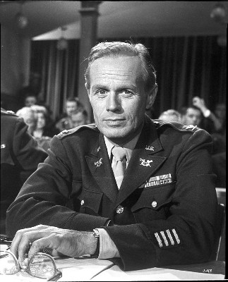 Richard Widmark als Col. Jim Bowie
- Laurence Harvey als Col. William Travis
- Frankie Avalon als Smitty
- 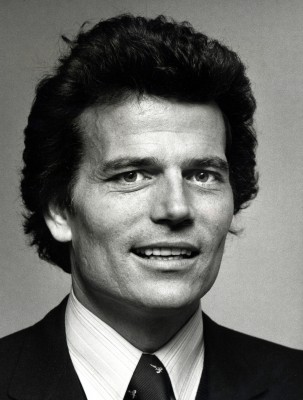 Patrick Wayne als Capt. James Butler Bonham
- 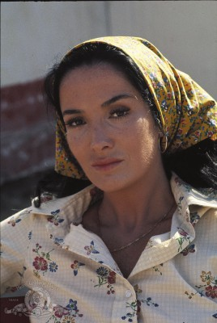 Linda Cristal als Flaca
- Joan O'Brien als Mrs. Sue Dickinson
- 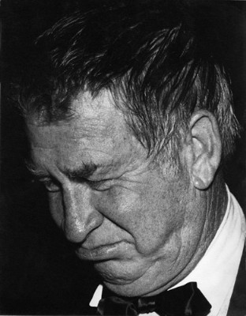 Chill Wills als Beekeeper
- Joseph Calleia als Juan Seguin
- 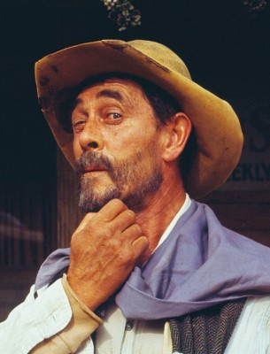 Ken Curtis als Capt. Almeron Dickinson
- Veda Ann Borg als Blind Nell Robertson
- 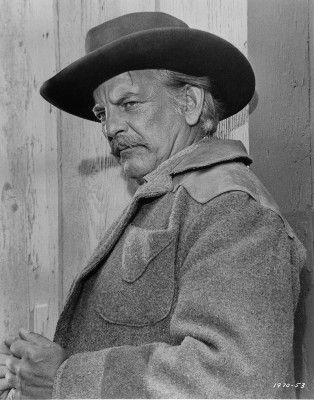 Denver Pyle als Thimblerig, the Gambler
- 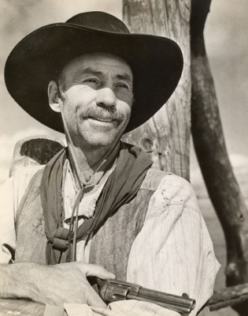 Hank Worden als Parson
- 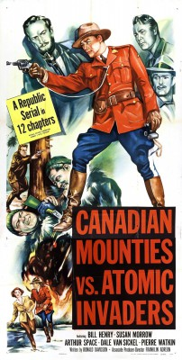 William Henry als Dr. Sutherland
- Guinn 'Big Boy' Williams als Lt. 'Irish' Finn
- 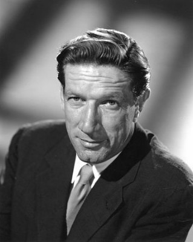 Richard Boone als Gen. Sam Houston
- Carol Baxter als Melinda , uncredited
- Mickey Finn als Bowie's Man , uncredited
- 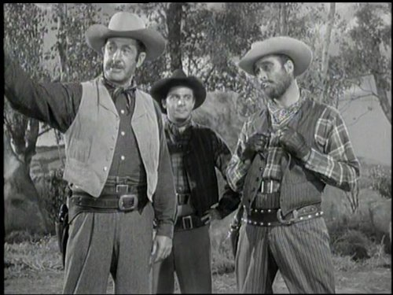 Fred Graham als Bearded Volunteer , uncredited
- 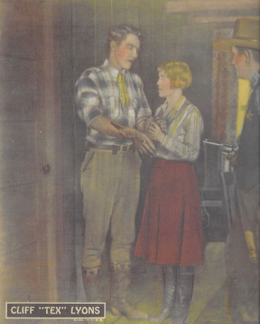 Cliff Lyons als (uncredited
- 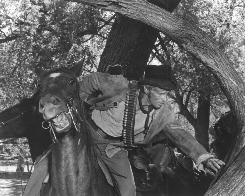 Dean Smith als Bowie's Man , uncredited
- Toni Wayne als (uncredited
- Carlos Arruza als Lt. Reyes
- Jester Hairston als Jethro
- 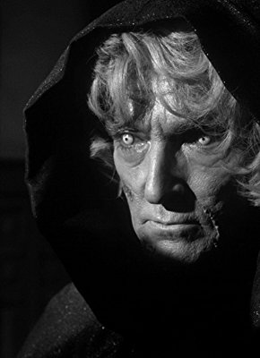 John Dierkes als Jocko Robertson
- Aissa Wayne als Lisa Angelica Dickinson
- Bill Daniel als Col. Neill
- Wesley Lau als Emil Sande
- 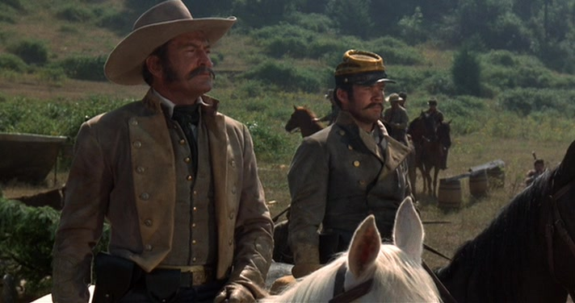 Chuck Roberson als Tennesseean
- Olive Carey als Mrs. Dennison
- Ruben Padilla als General Santa Anna
- Ray Ackland als Travis' Man , uncredited
- Charles Akins als Travis' Man , uncredited
- Harold Allgood als Travis' Man , uncredited
- Lee Allison als Tennessean , uncredited
- D.E. Barentine als Bowie's Man , uncredited
- Abe Blankenship als Bowie's Man , uncredited
- F. Bode als Bowie's Man , uncredited
- Danny Borzage als Bowie's Man , uncredited
- Buff Brady als Tennessean , uncredited
- Paul Breen als Bowie's Man , uncredited
- Jim Brewer als Travis' Man , uncredited
- Jim Burk als Tennessean , uncredited
- Joe Canutt als Bowie's Man , uncredited
- Tap Canutt als Bowie's Man , uncredited
- A.R. Carpenter als Bowie's Man , uncredited
- Ed Carter als Bowie's Man , uncredited
- Georges Cartes als Bowie's Charro , uncredited
- Vincente Castro als Bowie's Charro , uncredited
- Teresa Champion als Flamenco Dancer , uncredited
Datei: X:\HD-Western-Collections\John Wayne\Alamo (1960, FSK12, 1920x816).mkv seit 26.09.2016
Festplatte: HD Eastern+Western
 Es gibt insgesamt 34 Filme in der Gruppe 'HD-Western-Collections\John Wayne'
Es gibt insgesamt 34 Filme in der Gruppe 'HD-Western-Collections\John Wayne'